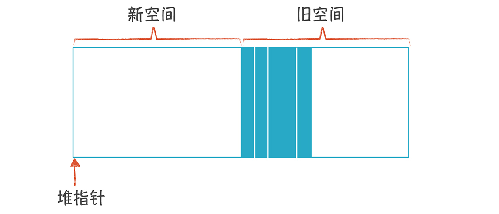

- 00 开篇词 为什么你要学习编译原理？.md.html
- 01 理解代码：编译器的前端技术.md.html
- 02 正则文法和有限自动机：纯手工打造词法分析器.md.html
- 03 语法分析（一）：纯手工打造公式计算器.md.html
- 04 语法分析（二）：解决二元表达式中的难点.md.html
- 05 语法分析（三）：实现一门简单的脚本语言.md.html
- 06 编译器前端工具（一）：用Antlr生成词法、语法分析器.md.html
- 07 编译器前端工具（二）：用Antlr重构脚本语言.md.html
- 08 作用域和生存期：实现块作用域和函数.md.html
- 09 面向对象：实现数据和方法的封装.md.html
- 10 闭包： 理解了原理，它就不反直觉了.md.html
- 11 语义分析（上）：如何建立一个完善的类型系统？.md.html
- 12 语义分析（下）：如何做上下文相关情况的处理？.md.html
- 13 继承和多态：面向对象运行期的动态特性.md.html
- 14 前端技术应用（一）：如何透明地支持数据库分库分表？.md.html
- 15 前端技术应用（二）：如何设计一个报表工具？.md.html
- 16 NFA和DFA：如何自己实现一个正则表达式工具？.md.html
- 17 First和Follow集合：用LL算法推演一个实例.md.html
- 18 移进和规约：用LR算法推演一个实例.md.html
- 19 案例总结与热点问题答疑：对于左递归的语法，为什么我的推导不是左递归的？.md.html
- 20 高效运行：编译器的后端技术.md.html
- 21 运行时机制：突破现象看本质，透过语法看运行时.md.html
- 22 生成汇编代码（一）：汇编语言其实不难学.md.html
- 23 生成汇编代码（二）：把脚本编译成可执行文件.md.html
- 24 中间代码：兼容不同的语言和硬件.md.html
- 25 后端技术的重用：LLVM不仅仅让你高效.md.html
- 26 生成IR：实现静态编译的语言.md.html
- 27 代码优化：为什么你的代码比他的更高效？.md.html
- 28 数据流分析：你写的程序，它更懂.md.html
- 29 目标代码的生成和优化（一）：如何适应各种硬件架构？.md.html
- 30 目标代码的生成和优化（二）：如何适应各种硬件架构？.md.html
- 31 内存计算：对海量数据做计算，到底可以有多快？.md.html
- 32 字节码生成：为什么Spring技术很强大？.md.html
- 33 垃圾收集：能否不停下整个世界？.md.html
- 34 运行时优化：即时编译的原理和作用.md.html
- 35 案例总结与热点问题答疑：后端部分真的比前端部分难吗？.md.html
- 36 当前技术的发展趋势以及其对编译技术的影响.md.html
- 37 云编程：云计算会如何改变编程模式？.md.html
- 38 元编程：一边写程序，一边写语言.md.html
- 加餐 汇编代码编程与栈帧管理.md.html
- 用户故事 因为热爱，所以坚持.md.html
- 第二季回归 这次，我们一起实战解析真实世界的编译器.md.html
- 结束语 用程序语言，推动这个世界的演化.md.html
- 捐赠
33 垃圾收集：能否不停下整个世界？
对于内存的管理，我们已经了解了栈和栈桢，在编译器和操作系统的配合下，栈里的内存可以实现自动管理。
不过，如果你熟悉C和C++，那么肯定熟悉在堆中申请内存，也知道要小心维护所申请的内存，否则很容易引起内存泄漏或奇怪的Bug。
其实，现代计算机语言大多数都带有自动内存管理功能，也就是垃圾收集（GC）。程序可以使用堆中的内存，但我们没必要手工去释放。垃圾收集器可以知道哪些内存是垃圾，然后归还给操作系统。
那么这里会有几个问题，也是本节课关注的重点：
- 自动内存管理有哪些不同的策略？这些策略各自有什么优缺点？
- 为什么垃圾收集会造成系统停顿？工程师们又为什么特别在意这一点？
相信学完这节课之后，你对垃圾收集的机制理解得会更加深刻，从而在使用Java、Go等带有垃圾收集功能的语言时，可以更好地提升回收效率，减少停顿，提高程序的运行效率。
当然，想要达到这个目的，你首先需要了解什么是内存垃圾，如何发现哪些内存是没用的？
什么是内存垃圾
内存垃圾是一些保存在堆里的对象，但从程序里已经无法访问。
在堆中申请一块内存时（比如Java中的对象实例），我们会用一个变量指向这块内存。这个变量可能是：全局变量、常量、栈里的变量、寄存器里的变量。我们把这些变量叫做GC根节点。它指向的对象中，可能还包含指向其他对象的指针。
但是，如果给变量赋予一个新的地址，或者当栈桢弹出，该栈桢的变量全部失效，这时，变量所指向的内存就无用了（如图中的灰色块）。

另外，如果A对象有一个成员变量指向C对象，那么如果A不可达，C也会不可达，也就失效了。但D对象除了被A引用，还被B引用，仍然是可达的。

所以，所有可达的内存就不是垃圾，而计算可达性，重点在于知道哪些是根节点。在一个活动记录（栈桢）里，有些位置放的是指向堆中内存的指针，有的位置不是，比如，可能存放的是返回地址，或者是一个整数值。如果我们能够知道活动记录的布局，就可以找出所有的指针，然后就能计算寻找垃圾内存。

现在，你应该知道了内存垃圾的特点了，接下来，只要用算法找出哪些内存是不可达的，就能进行垃圾收集了。
标记和清除（Mark and Sweep）
标记和清除算法是最为经典的垃圾收集算法，它分为标记阶段和清除阶段。
在标记阶段中，GC跟踪所有可达的对象并做标记。每个对象上有一个标记位，一开始置为0，如果发现这个对象是可达的，就置为1。这个过程其实就是图的遍历算法，我们把这个算法细化一下，写成伪代码如下：
把所有的根节点加入todo列表
只要todo列表不为空，就循环处理：
从todo列表里移走一个变量v
如果v的标记为0，那么
把v的标记置为1
假设v1...vn是v中包含的指针
那么把v1...vn加入todo列表(去除重复成员)
下面的示例图中，x和y是GC根节点，标记完毕以后，A、C和D是可达的，B、E和F是可收集的（我用不同的颜色做了标注）。

在清除阶段中，GC遍历所有从堆里申请的对象，把标记为0的对象收回，把标记为1的内存重新置为0，等待下次垃圾收集再做标记。
这个算法虽然看上去简单清晰，但存在一个潜在的问题。
在标记阶段，也就是遍历图的时候，必须要有一个列表作为辅助的数据结构，来保存所有待检查的对象。但这个列表要多大，只有运行时才清楚，所以没有办法提前预留出一块内存，用于清除算法。而一旦开始垃圾收集，那说明系统的内存已经比较紧张了，所以剩下的内存是否够这个辅助的数据结构用，是不确定的。
可能你会说：那我可以改成递归算法，递归地查找下级节点并做标记。这是不行的，因为每次递归调用都会增加一个栈桢，来保存递归调用的参数等信息，内存消耗有可能更大。
不过，方法总比问题多，针对算法的内存占用问题，你可以用指针逆转（pointer reversal）来解决。这个技术的思想是：把算法所需要的辅助数据，记录在内存对象自身的存储空间。具体做法是：顺着指针方向从A到达B时，我们把从A到B的指针逆转过来，改成从B到A。把B以及B的子节点标记完以后，再顺着这个指针找到回去的路，回到A，然后再把指针逆转回来。
整个标记过程的直观示意图如下：


 -
-
 -
-

关于这个技术，你需要注意其中一个技术细节：内存对象中，可能没有空间来存一个指针信息。比如下图中，B对象原来就有一个变量，用来保存指向C的指针。现在用这个变量的位置保存逆转指针，来指向A就行了。但到C的时候，发现C没有空间来存逆转到B的指针。
这时，借助寄存器就可以了。在设置从B到A的指针之前，要把B和C的地址，临时保存在寄存器里，避免地址的丢失。进入C以后，如果C没有存指针的空间，就证明C是个叶子节点，这时，用寄存器里保存的地址返回给B就行了。
采用标记和清除算法，你会记住所有收集了的内存（通常是存在一个双向列表里），在下次申请内存的时候，可以从中寻找大小合适的内存块。不过，这会导致一个问题：随着我们多次申请和释放内存，内存会变得碎片化。所以，在申请内存的时候，要寻找合适的内存块，算法会有点儿复杂。而且就算你努力去寻找，当申请稍微大一点儿的内存时，也会失败。
为了避免内存碎片，你可以采用变化后的算法，标记-整理算法：在做完标记以后，做一下内存的整理，让存活的对象都移动到一边，消除掉内存碎片。

除此之外，停止和拷贝算法，也能够避免内存碎片化。
停止和拷贝（Stop and Copy）
采用这个算法后，内存被分成两块：
- 一块是旧空间，用于分配内存。
- 一块是新空间，用于垃圾收集。
停止和拷贝算法也可以叫做复制式收集（Coping Collection）。

你需要保持一个堆指针，指向自由空间开始的位置。申请内存时，把堆指针往右移动就行了，比标记-清除算法申请内存更简单。
这里需要注意，旧空间里有一些对象可能已经不可达了（图中的灰色块），但你不用管。当旧空间变满时，就把所有可达的对象，拷贝到新空间，并且把新旧空间互换。这时，新空间里所有对象整齐排列，没有内存碎片。

停止-拷贝算法被认为是最快的垃圾收集算法，有两点原因：
- 分配内存比较简单，只需要移动堆指针就可以了。
- 垃圾收集的代价也比较低，因为它只拷贝可达的对象。当垃圾对象所占比例较高的时候，这种算法的优势就更大。
不过，停止-拷贝算法还有缺陷：
- 有些语言不允许修改指针地址。
在拷贝内存之后，你需要修改所有指向这块内存的指针。像C、C++这样的语言，因为内存地址是对编程者可见的，所以没法采用停止和拷贝算法。
- 始终有一半内存是闲置的，所以内存利用率不高。
- 最后，它一次垃圾收集的工作量比较大，会导致系统停顿时间比较长，对于一些关键系统来说，这种较长时间的停顿是不可接受的。但这两个算法都是基础的算法，它们可以被组合进更复杂的算法中，比如分代和增量的算法中，就能避免这个问题。
引用计数（Reference Counting）
引用计数支持增量的垃圾收集，可以避免较长时间的停顿。
它的原理是：在每个对象中，保存引用本对象的指针数量，每次做赋值操作时，都要修改这个引用计数。如果x和y分别指向A和B，当执行“x=y”这样的赋值语句时，要把A的引用计数减少，把B的引用计数增加。如果某个对象的引用计数变成了0，那就可以把它收集掉。
所以，引用计数算法非常容易实现，只需要在赋值时修改引用计数就可以了。
不过，引用计数方法也有缺陷：
首先，是不能收集循环引用的结构。比如图中的A、B、C和D的引用计数都是1，但它们只是互相引用，没有其他变量指向它们。而循环引用在面向对象编程里很常见，比如一棵树的结构中，父节点保存了子节点的引用，子节点也保存了父节点的引用，这会让整棵树都没有办法被收集。

如果你有C++工作经验，应该思考过，怎么自动管理内存。有一个思路是：实现智能指针，对指针的引用做计数。这种思路也有循环引用的问题，所以要用其他算法辅助，来解决这个问题。
其次，在每次赋值时，都要修改引用计数，开销大。何况修改引用计数涉及写内存的操作，而写内存是比较慢的，会导致性能的降低。
其实，这三个算法都是比较单一的算法，实际上，它们可以作为更复杂、更实用算法的组成部分，比如分代收集算法。
分代收集（Generational Collection）
分代收集算法在商业级的产品里很普及，比如Java和Go语言的GC。
它的核心思想是：在程序中，往往新创建的对象会很快死去，比如，你在一个方法中，使用临时变量指向一些新创建的对象，这些对象大多数在退出方法时，就没用了。根据这个原理，垃圾收集器将注意力集中在比较“年轻”的数据上，因为它们成为垃圾的概率比较高。
我们把堆划分成若干“代”（Generation）：G0是最新代，G1就要老一些。不过GC根节点的计算有一个小小的区别：在收集G0时，根节点除了全局变量、栈和寄存器中的变量外，还要包含老一代的对象中指向G0的指针（下图中橙色的线，都是指向G0中对象的）。
所以，一个重要的问题是：记住G1、G2…中的根节点。但如果每次都去搜一遍，相当于遍历所有世代，效率很低。所以，要采用效率高一点儿的算法，比如记忆表法。
这个算法是指：如果A对象的x属性被设置成了B对象，那么就要把A对象加入一个向量里（记忆表），记住这个对象曾经被更新过。在垃圾收集时，要扫描这张表，寻找指向G0的老对象。
因为这个算法要记的对象太多，记忆表会变得很大，不太划算。不过我们可以把内存划为2的k次方大小的一个个卡片，如果卡片上的对象被赋值，那么就把这张卡片标记一下，这叫做卡片标记法。
如果你熟悉操作系统，会马上发现，这种卡片和操作系统内存管理时的分页比较相似。所以你可以由操作系统帮忙记录哪页被写入数据了，这种方法叫做页标记法。
解决了根节点的问题之后，我们就可以对G0进行收集了。在G0被收集了多次以后，对G1、G2也可以进行收集。这里你需要注意，G0比较适合复制式收集算法，因为大部分对象会被收集掉，剩下来的不多；而老年代的对象生存周期比较长，拷贝的话代价太大，比较适合标记-清除算法，或者标记-整理算法。
Java的GC就采用了分代收集，现在，你再去看介绍Java垃圾收集的资料，会容易多了。
在带你了解了一些常见的垃圾收集算法之后，我想和你讨论一下：能否不停下整个世界？这个标题里的痛点问题。
增量收集和并发收集（Incremental Collection, Concurrent Collection）
垃圾收集算法在运行时，通常会把程序停下。因为在垃圾收集的过程中，如果程序继续运行，程序可能会出错。这种停下整个程序的现象，被形象地称作“停下整个世界（STW）”。
可是让程序停下来，会导致系统卡顿，用户的体验感会很不好。一些对实时性要求比较高的系统，根本不可能忍受这种停顿。
所以，在自动内存管理领域的一个研究的重点，就是如何缩短这种停顿时间。以Go语言为例，它的停顿时间从早期的几十毫秒，已经降低到了几毫秒。甚至有一些激进的算法，力图实现不用停顿。增量收集和并发收集算法，就是在这方面的有益探索。
增量收集可以每次只完成部分收集工作，没必要一次把活干完，从而减少停顿。
并发收集就是在不影响程序执行的情况下，并发地执行垃圾收集工作。- 为了讨论增量和并发收集算法，我们定义两个角色：一个是收集器（Collector），负责垃圾收集；一个是变异器（Mutator），其实就是程序本身，它会造成可达对象的改变。
然后，用三色标记（tricolor marking）的方法，来表示算法中，不同的内存对象的处理阶段：
- 白色表示，算法还没有访问的对象。
- 灰色表示，这个节点已经被访问过，但子节点还没有被访问过。
- 黑色节点表示，这个节点已经访问过，子节点也已经被访问过了。
用三色标记法来分析的话，你会发现前面的算法有两个特点：
1.不会有黑色对象指向白色对象，因为黑色对象都已经被扫描完毕了。- 2.每一个灰色对象都处于收集器的待处理工作区中，比如在标记-清除算法的todo列表中。
再进一步分析后，我们发现，只要保证这两个特点一直成立，那么收集器和变异器就可以一起工作，互不干扰，从而实现增量收集或并发收集。因为算法可以不断扫描灰色对象，加入到黑色区域。这样整个算法就可以增量式地运行下去。
现在我们的重点，就变成了保证上面两个特点一直成立。比如，如果变异器要在一个黑色对象a里存储一个指针b，把a涂成灰色，或者把b涂成灰色，都会保持上面两条的成立。或者当变异器要读取一个白色指针a的时候，就把它涂成灰色，这样的话也不会违背上面两条。
不同的算法会采取不同的策略，但无论采取哪种算法，收集器和变异器都是通过下面三种机制来协作：
读屏障（read barrier 或 load barrier）。在load指令（从内存到寄存器）之后立即执行的一小段代码，用于维护垃圾收集所需的数据。包括把内存对象涂成正确的颜色，并保证所有灰色对象都在算法的工作区里。
写屏障（write barrier 或 store barrier）。在store指令（从寄存器到内存）之前执行的一小段代码，也要为垃圾收集做点儿工作。
安全点（safepoint）。安全点是代码中的一些点，在这些点上，指针的值是可以安全地修改的。有时，你修改指针的值是有问题的，比如正在做一个大的数组的拷贝，拷到一半，你把数组的地址改了，这就有问题。所以安全点一般都在方法调用、循环跳转、异常跳转等地方。
概要地总结一下：要想实现增量或并发的垃圾收集，就要保证与垃圾收集有关数据的正确性，所以，需要读屏障、写屏障两个机制。另外，还要保证垃圾收集不会导致程序出错，所以需要安全点机制。
要实现这三个机制，需要编译器的帮助。
LLVM对垃圾收集的支持
总的来说，垃圾收集器是一门语言，运行期的一部分，不是编译器的职责。所以，LLVM并没有为我们提供垃圾收集器。但是，要想让垃圾收集器发挥功能，必须要编译器配合，LLVM能够支持：
- 在代码中创建安全点，只有在这些点上才可以执行GC。
- 计算栈图（Stack Map）。在安全点上，栈桢中的指针会被识别出来，作为GC根节点被GC所使用。
- 提供写屏障和读屏障的支持，用于支持增量和并发收集。
LLVM能为当前所有常见的GC算法提供支持，包括我们本讲提到的所有算法，你写GC的时候，一定要跟LLVM配合，才能让GC顺利发挥作用。
课程小结
垃圾收集是高级语言的重要特征，我们针对垃圾收集，探讨了它的原理和常见的算法，我希望你记住以下几点：
- 内存垃圾是从根节点不能到达的对象。
- 标记-清除算法中，你要记住不占额外的内存来做标记的技巧，也就是指针逆转。
- 停止-拷贝算法比较适合活对象比例比较低的情况，因为只需要拷贝少量对象。
- 引用计数的方法比较简单，但不能处理循环引用的情况，所以可以考虑跟其他算法配合。
- 分代收集算法非常有效，关键在于计算老一代中的根节点。
- 增量收集和并发收集是当前的前沿，因为它能解决垃圾收集中最大的痛点，时延问题
- LLVM给垃圾收集提供安全点、栈图、读写屏障方面的支持，GC要跟编译器配合才能很好的工作。
总之，垃圾收集是一项很前沿的技术，如果你有兴趣在这方面做些工作，有一些开源的GC可以参考。不过，就算不从事GC的编写，仅仅了解原理，也会有助于你更好地使用自己的语言，比如把Java和Go语言做好调优。
一课一思
垃圾收集机制曾经给你造成了什么困惑吗？你是怎么解决的？学完本讲后，能否从原理的角度分析一下？欢迎在留言区分享你的观点。
最后，感谢你的阅读，如果这篇文章让你有所收获，也欢迎你将它分享给更多的朋友。
© 2019 - 2023 Liangliang Lee. Powered by gin and hexo-theme-book.